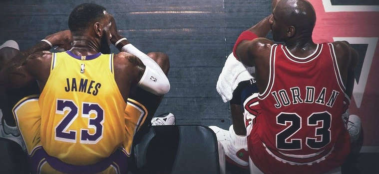

Points Scored by Age
Michael Jordan started his NBA career at age 21. Following his 1st year in NBA, he suffered an injury at age 22, and ended up missing 64 of 82 NBA games. Jordan had 2 retirements, each at age 30 and age 35-37. Despite the season with injuries, and 2 time retirements, we can see Jordan outscores other players throughout his career.
Kobe entered the NBA at an extremely young age (18). Known for his scoring abilities, its surprising seeing Kobe’s graph would look like this comparing to other 2. However it is also clear that at the age of 27, his scoring abilities at prime time is comparable to Michael Jordan.
Lebron James’ graph showed us his longevity and consistence throughout his career. It is clear to see Lebron has taken his health and wellness seriously, so he is able to maintain his consistence from the age of 19 to age 39. And his legacy still goes on until this day.
Career Averages

Michael Jordan has the highest scoring averages among the 3 players, while maintaining a high 49.7% field goals on average. His defending averages on steals and blocks also ranks 1st among other players.
Despite known for his scoring abilities, Kobe surprisingly falls short on his score averages and field goals percentage. His rebounding, stealing, and blocking falls short too comparing to the other 2 players.
Lebron is known for his all around game abilities on both end of the court. This is shown on the statistics too, scoring an average of 27.1 points while maintaining an extremely high percentage of field goals (50.6%). Note he is also the best rebounder out of the 3, but quite a disappointment on the defensive side with his atheleticism.
Player Abilities
Michael Jordan is the best scorer according to the graph. Out of 100, he has 94 on outside scoring and 85 on inside scoring (near basket). His defending abilities also ranks 1st among the 3 players.
Kobe’s statistics again shows his abilities are not comparable to the other 2 players. When combining the 3 radar graphs together, the differences are clearly seen that, Kobe falls short on most of the categories other than outside scoring, which is his well known ability.
Lebron James on this graph once again shows us his all around abilities due to his height and athleticism. When combining lebron’s grpah and Jordan’s graph together, Lebron outscores Jordan on Inside scoring, rebounding, playmaking, and a slight edge over Jordan’s atheleticism.